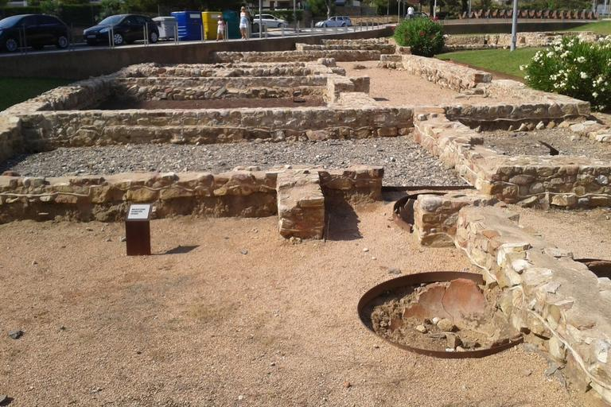

Visita · Platja d'Aro
Vil·la romana del Pla de Palol, segle I aC – VII dC. Les restes arqueològiques no són més que una part del que va ser el gran complex residencial i agrari del Pla de Palol . La part residencial de…
Obre-ho a l'app ›